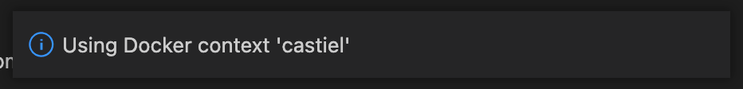

Synology + Docker + VSCode
TL;DR: My new Synology NAS supports Docker and I can connect to it with VSCode for tinkering with all my horrible projects!
Over the past couple of decades, I've had a Linux box kicking around on a basement shelf. It's a Ship of Theseus, composed of parts filtering out of my gaming PC after upgrades. This box tends to host my random experiments and learning projects - and it also tends to be broken in some way or another. That's fun for tinkering, but frustrating for things I want to stay working in between bouts of tinkering.
Enter my discovery of low-end Synology NAS devices: They're tidy little things, like the size of two Nintendo Wii taped together.
My first was a DS210j in 2010, followed by a DS214play in 2015. They reliably take on the boring jobs that I've gotten tired of maintaining on my perpetually janky hobby server.

And then, just this week, I acquired a DS723+ . This one is quite an upgrade: My first NAS had 128MB of RAM and the second sported 2GB. This latest one has been upgraded with a whole 32GB. Along with that, I've slapped in a pair of 10TB IronWolf hard drives in a RAID1 configuration.
Beyond backups and media storage, why bother with all that for just a NAS? Well, this one supports Docker. And, as it turns out, a great many of my tinkering projects fit nicely into Docker containers.
So, in other words, it appears that this latest NAS can even take on the boring job of hosting many janky little hobby servers - virtually! This, while continuing to reliably do everything else a Synology NAS does.

With Docker containers, I don't have to try crapping up the Synology host OS with attempts at installing assorted programming languages and tools (ahem, optware).
I have a long history of ill-advised attempts to turn a NAS into a dev machine, going all the way back to the Linksys NSLU2, circa 2004. But, if I crap up a Docker container, I can toss it and rebuild without disturbing, say, the DVR for my TV antenna or the self-hosted RSS reader we use at home.
The web UI even has a cute little in-browser terminal for access to the container:

Of course, I'll likely find limits to this. I can imagine there'll be some tinkery projects I don't want moshing around on the thing that lets us watch Seinfeld reruns after dinner. I'll still have my Ship of Theseus on hand for that stuff. But, that still leaves a great many things I can just toss onto the Synology for fun.
And speaking of my network, I just discovered how to connect VSCode via SSH to a Docker container on a remote host - i.e. my shiny new Synology DS723+ server. This makes for a kind of fiddly self-hosted alternative to GitHub Codespaces in my basement.
Key to this are Docker contexts - they've been around for a few years, and I've likely been using tools that use them, but I hadn't really learned about them until this week. Long story short, I can switch docker on my Mac laptop over to managing Docker on my NAS like so:
docker context create castiel --docker "host=ssh://lmorchard@castiel"
docker context use castiel
docker ps
(Yes, I named my new server "Castiel" after the angel from Supernatural. Watching over our files, he'd probably think we've hoarded too many episodes of Frasier and Star Trek.)
Anyway, once I have a new working Docker context defined, I can access it from VSCode for tinkering. First thing is to select the Docker context. On my Mac, that means hitting Command-Shift-P and typing "dockeru" until the Docker Contexts: Use command appears:

Selecting that gives me a selection of contexts, which includes castiel:
I pick that, and VSCode confirms the selection:
 Now, when I click on Remote Explorer in the sidebar here, all the running containers on my Synology soon appear. From here, I can click on the "Attach to Container" button:
Once attached, I can add a folder from the container and start tinkering away on this very blog post!

Oh yeah, and since this is Docker, I can mount a path from the host NAS as storage for all my project code outside of the disposable container:
I know there can be some problems with this, I think largely around file watchers and suchlike. But, I'll burn those bridges when I get to them. For now, this seems like a fun new toy to play with and it's off-loaded a few more little jobs from my junker PC.
Maybe next I can reformat the hobby server and try some more advanced things like Proxmox and friends, so it'll be like a big sibling to the little Synology.